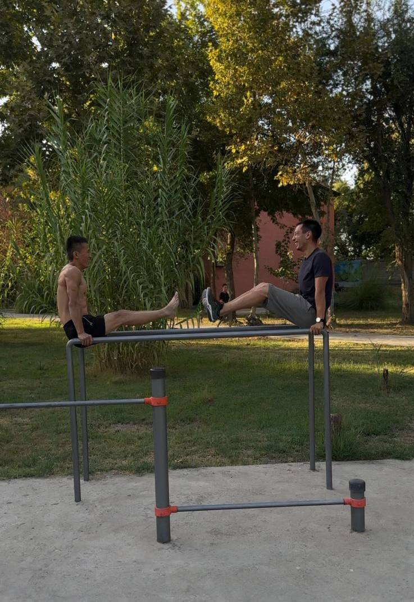

Александр, более известный как Просто Саша, относится к редкому типу людей, которые способны починить практически всё. Если что-то сломалось, Саша сначала посмотрит на проблему, потом на подручные материалы, а потом каким-то образом заставит это снова работать.
Говорят, что из говна и палок ничего хорошего не получится. Саша считает это личным вызовом.
Сколько лет Саше на самом деле, достоверно неизвестно. Однако сам он, как и Узбекский Маск, уверенно утверждает, что ему 18. Эта версия настолько активно продвигается обоими участниками клуба, что спорить уже практически бесполезно.
Совпадение это или нет, но сторонников теории с каждым годом становится всё меньше.

Саша никогда не жалуется на жизнь и не ворчит. Иногда кажется, что его вообще невозможно вывести из себя. Даже в самых странных ситуациях он умудряется сохранять хорошее настроение.
Зато есть караоке. В этот момент спокойная жизнь окружающих заканчивается. Саша может петь до самого утра, а соседи начинают вспоминать, за какие грехи им послали такое испытание.